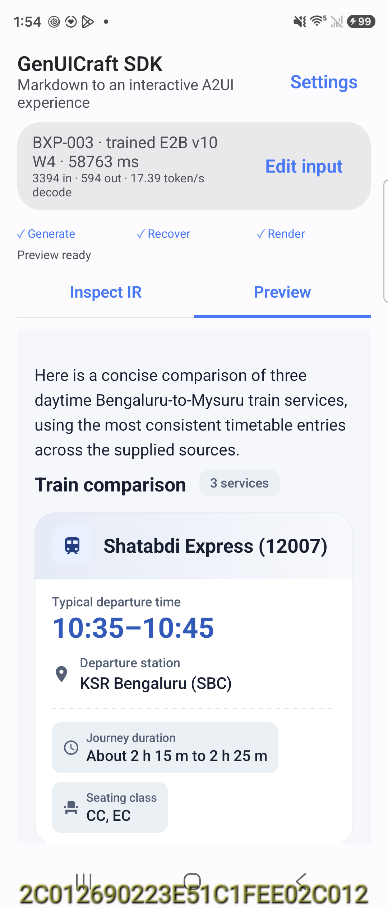
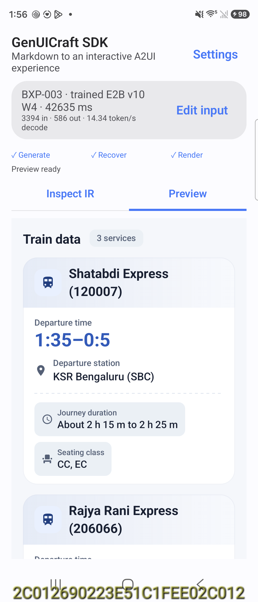

Supplied CUDA checkpoint
578 tokens; raw strict valid: True
<a2ui>
$/={trains:[{service:"Shatabdi Express (12007)",departure:"KSR Bengaluru (SBC)",departure_time:"10:35–10:45",duration:"About 2 h 15 m to 2 h 25 m",class:"CC, EC"},{service:"Rajya Rani Express (20660)",departure:"KSR Bengaluru (SBC)",departure_time:"11:30",duration:"About 2 h 30 m",class:"CC, 2S, GN"},{service:"Wodeyar Express (12614)",departure:"KSR Bengaluru (SBC)",departure_time:"15:15",duration:"About 2 h 30 m",class:"CC, 2S, GN"}]}
root=Column([a,b,c,d,i],gap="md",padding=16)
a=Text("Here is a concise comparison of three daytime Bengaluru-to-Mysuru train services, using the most consistent timetable entries across the supplied sources.",variant="body")
b=Table(columns=[{key:"service",label:"Train service"},{key:"departure",label:"Departure station"},{key:"departure_time",label:"Typical departure time"},{key:"duration",label:"Journey duration"},{key:"class",label:"Seating class"}],statePath="/trains",domain="comparison",preferredPresentation="cards",primaryColumn="service",numericColumns=["departure_time"])
c=Text("A few timetable notes:","h2")
d=Column([e,f,g,h],"sm")
e=Text("Shatabdi Express has a small timing discrepancy across sources: one source lists 10:45, while another lists 10:35.","caption")
f=Text("Shatabdi Express also shows slight variation in duration, from about 2 h 15 m to 2 h 25 m.","caption")
g=Text("Rajya Rani Express is consistently shown at 11:30 with a 2 h 30 m journey.","caption")
h=Text("Wodeyar Express is consistently shown at 15:15 with a 2 h 30 m journey.","caption")
i=Card([j])
j=Column([k,l],"sm",padding=16)
k=Text("If you want, I can also provide the same comparison with arrival times and days of operation included.",variant="body")
l=Button("View Arrival Times","primary")
</a2ui>LiteRT CPU · MTP off
58.76s; 594 tokens; raw valid: True; repair: NONE
<a2ui>
$/={train_comparison:[{service:"Shatabdi Express (12007)",departure:"KSR Bengaluru (SBC)",departure_time:"10:35–10:45",duration:"About 2 h 15 m to 2 h 25 m",seating:"CC, EC"},{service:"Rajya Rani Express (20660)",departure:"KSR Bengaluru (SBC)",departure_time:"11:30",duration:"About 2 h 30 m",seating:"CC, 2S, GN"},{service:"Wodeyar Express (12614)",departure:"KSR Bengaluru (SBC)",departure_time:"15:15",duration:"About 2 h 30 m",seating:"CC, 2S, GN"}]}
root=Column([a,b,c,d,i],gap="md",padding=16)
a=Text("Here is a concise comparison of three daytime Bengaluru-to-Mysuru train services, using the most consistent timetable entries across the supplied sources.",variant="body")
b=Table(columns=[{key:"service",label:"Train service"},{key:"departure",label:"Departure station"},{key:"departure_time",label:"Typical departure time"},{key:"duration",label:"Journey duration"},{key:"seating",label:"Seating class"}],statePath="/train_comparison",domain="train",preferredPresentation="cards",primaryColumn="service",numericColumns=["departure_time"])
c=Text("A few timetable notes:","h2")
d=Card([e])
e=Column([f,g,h,i],"sm",padding=16)
f=Text("Shatabdi Express has a small timing discrepancy across sources: one source lists 10:45, while another lists 10:35.","caption")
g=Text("Shatabdi Express also shows slight variation in duration, from about 2 h 15 m to 2 h 25 m.","caption")
h=Text("Rajya Rani Express is consistently shown at 11:30 with a 2 h 30 m journey.","caption")
i=Text("Wodeyar Express is consistently shown at 15:15 with a 2 h 30 m journey.","caption")
j=Card([k])
k=Text("If you want, I can also provide the same comparison with arrival times and days of operation included.","chip")
l=Button("View Arrival Times","borderless",onPress=openUrl("[ACTION_URL_1]"))
</a2ui>Rendered screenshot

LiteRT GPU · MTP off
42.63s; 586 tokens; raw valid: False; repair: GENERATED_DSL_REPAIR
<a2ui>
$/={train_data:[{service:"Shatabdi Express (120007)",departure:"KSR Bengaluru (SBC)",departure_time:"1:35–0:5",duration:"About 2 h 15 m to 2 h 25 m",class:"CC, EC"},{service:"Rajya Rani Express (206066)",departure:"KSR Bengaluru (BC)",departure_time:"111:0",duration:"About 2 h 30 m",class:"CC, 2, GN"},{service:"Wodeyar Express (2146)",departure:"KSR Bengaluru (BC)",departure_time:"15:5",duration:"About 2 h 30 m",class:"CC, 2, GN"}]}
root=Column([a,b,c,g,m])
a=Card([b])
b=a=Text("Here is a concise comparison of three daytime Bengaluru-to-Mysuru train services, using most consistent timetable entries across the supplied sources.",variant="body")
c=Column([d,e],"sm")
d=Table(columns=[{key:"service","departure":"Departure station",{key:"Departure station",value:"KSR Bengaluru (SBC)"},{key:"Typical departure time",value:"1:3550:5"},{key:"Journey duration",value:"About 2 h 15 m to 2 h 2 5 m"},{key:"Seating class",value:"CC, EC"}],statePath="/train_data",domain="train",preferredPresentation="cards",primaryColumn="true")
e=Text("A few timetable notes:","h3")
f=Column([g,h,i,j,l],gap="md")
g=Text("Shatabdi Express has a small timing discrepancy across sources: one source lists 1:45 while another lists 1:35.",variant="body")
h=Text("Shatabdi Express also shows slight variation in duration, from about 2 h 15 m to 2 h 25 m.",variant="body")
i=Text("Rajya Rani Express is consistently shown at 1:30 with a 2 h 30 m journey.",variant="body")
j=Text("Wodeyar Express is consistently shown at 1:155 with a 2 h 30 m journey.",variant="body")
k=Text("If you want, I can also provide same comparison with arrival times and days of operation included.",variant="body")
l=Button("Provide Arrival Times","primary")
</a2ui>Rendered screenshot
